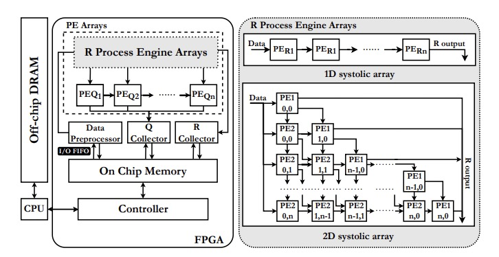
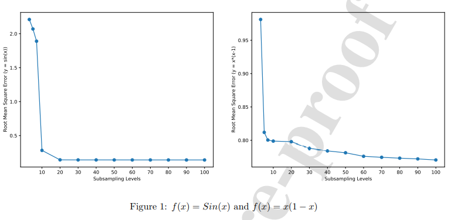
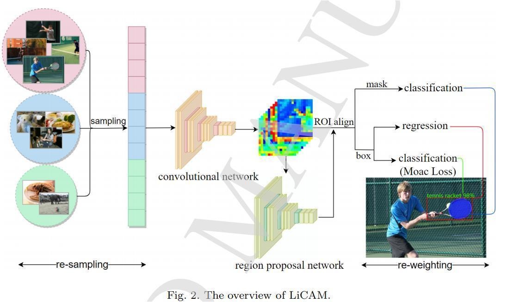

Publications
2022
 AAAI
AAAI

FPT

NN
Pairwise learning problems with regularization networks and Nyström subsampling approach
Cheng Wang, Ting Hu, Siyang Jiang
Neural Networks (2022)

JCSC
 PAKDD
PAKDD
PGADA:Perturbation-Guided Adversarial Alignment for Few-shot Learning Under the Support-QueryShift
Siyang Jiang, Wei Ding, Hsi-Wen Chen, Ming-Syan Chen
Proc. of the 26th Pacific-Asia Conference on Knowledge Discovery and Data Mining (PAKDD, 2022). Accept rate: 19.30%, 121 out of 627.
 IPSN
IPSN
2021
 RIIT
RIIT
.jpg) FPT
FPT
Dataflow Systolic Array Implementations of Exploring Dual-Triangular Structure in QR Decomposition Using High-Level Synthesis
Siyang Jiang, Hsi-Wen Chen, Ming-Syan Chen
Proc. of the IEEE International Conference on Field Programmable Technology (FPT 2021). Accept rate: 22.22%, 32 out of 144.